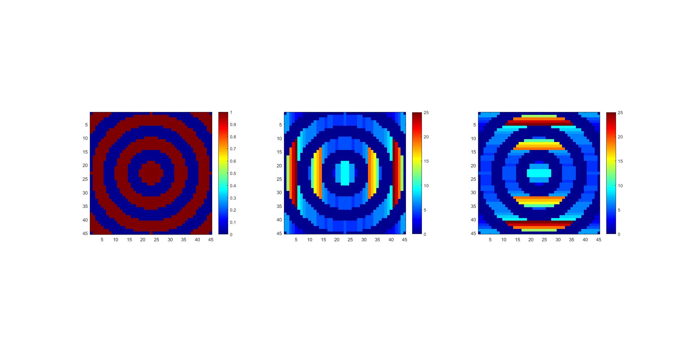
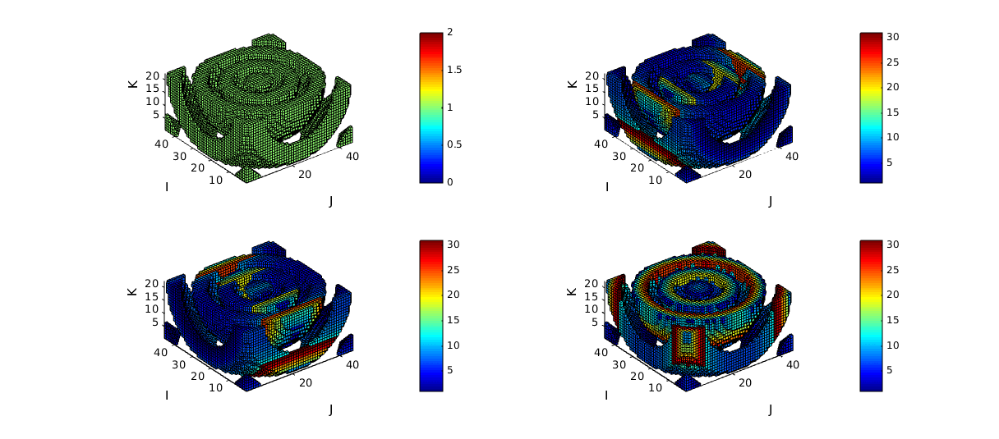

adjacentdircount
Below is a demonstration of the features of the adjacentdircount function
Contents
Syntax
[Lc]=adjacentdircount(L,n);
Description
The adjacentdircount function calculates the number of adjacent entries of an input logic array allong a specified direction.
Examples
close all; clc; %clear;
Plot settings
figColor='w'; figColorDef='white'; fontSize=10;
Example: Using adjacentdircount to compute "connectivity"
The adjacentdircount function computes the number of adjacent elements in the input array that have the value 1. As such it computes a type of connectivity or "thickness" of structures in the logic arrays allong a certain dimension.
Lets consider the following array:
L=[0 1 1 0 0 1;... 0 0 1 0 0 1;... 1 0 0 1 1 1]; %A logic array or an array containing ones
Now view the output of the adjacentdircount function for n=1:
n=1; %Row direction (i.e. thickness orthogonal to rows)
[Lc]=adjacentdircount(L,n);
Lc
Lc =
0 1 2 0 0 3
0 0 2 0 0 3
1 0 0 1 1 3
and similarly for for n=2:
n=2; %Column direction (i.e. thickness orthogonal to columns)
[Lc]=adjacentdircount(L,n);
Lc
Lc =
0 2 2 0 0 1
0 0 1 0 0 1
1 0 0 3 3 3
Example: Use for 3D arrays
Create a 3D example array, here L is copied upside down into a second "slice" and again for the third slice.
L(:,:,2)=flipud(L); L(:,:,3)=flipud(L(:,:,1));
n=3; %Slice direction (i.e. thickness orthogonal to slices)
[Lc]=adjacentdircount(L,n);
Lc
Lc(:,:,1) =
0 1 1 0 0 3
0 0 3 0 0 3
1 0 0 1 1 3
Lc(:,:,2) =
2 0 0 2 2 3
0 0 3 0 0 3
0 2 2 0 0 3
Lc(:,:,3) =
2 0 0 2 2 3
0 0 3 0 0 3
0 2 2 0 0 3
Example: Studying object line feature thickness
% Simulating a striped image in 3D np=45; [X,Y,Z]=meshgrid(linspace(-5*pi,5*pi,np)); R=sqrt(X.^2+Y.^2+Z.^2); %Radii M=sin(R);
First consider the mid-slice for 2D analysis
midInd=round(size(M,3)/2); m=M(:,:,midInd);
Convert to a logic array for thickness analysis
L=m>0;
Now use adjacentdircount to compute "connectivity" allong first and second dimensions
[Lc1]=adjacentdircount(L,1); %1st dim [Lc2]=adjacentdircount(L,2); %1st dim
Plotting the results
hf=figuremax(figColor,figColorDef); hold on; subplot(1,3,1); imagesc(L); colormap jet; colorbar; axis equal; axis tight; set(gca,'FontSize',fontSize); subplot(1,3,2); imagesc(Lc1); colormap jet; colorbar; axis equal; axis tight; set(gca,'FontSize',fontSize); subplot(1,3,3); imagesc(Lc2); colormap jet; colorbar; axis equal; axis tight; set(gca,'FontSize',fontSize); drawnow;
Now lets expand to 3D analysis
L=M>0; [Lc1]=adjacentdircount(L,1); %1st dim [Lc2]=adjacentdircount(L,2); %1st dim [Lc3]=adjacentdircount(L,3); %1st dim %Construct logic array setting voxels to display using |ind2patch| function logicPatch=L; %Initialise as L logicPatch(:,:,midInd:end)=0; %Crop off half to visualize interior [F,V,C]=ind2patch(logicPatch,L,'vb'); [F1,V1,C1]=ind2patch(logicPatch,Lc1,'vb'); [F2,V2,C2]=ind2patch(logicPatch,Lc2,'vb'); [F3,V3,C3]=ind2patch(logicPatch,Lc3,'vb'); figuremax(figColor,figColorDef); subplot(2,2,1); xlabel('J');ylabel('I'); zlabel('K'); hold on; patch('Faces',F,'Vertices',V,'FaceColor','flat','CData',C,'EdgeColor','k'); axis equal; view(3); axis tight; axis vis3d; grid off; colormap jet; colorbar; set(gca,'FontSize',fontSize); subplot(2,2,2); xlabel('J');ylabel('I'); zlabel('K'); hold on; patch('Faces',F1,'Vertices',V1,'FaceColor','flat','CData',C1,'EdgeColor','k'); axis equal; view(3); axis tight; axis vis3d; grid off; colormap jet; colorbar; set(gca,'FontSize',fontSize); subplot(2,2,3); xlabel('J');ylabel('I'); zlabel('K'); hold on; patch('Faces',F2,'Vertices',V2,'FaceColor','flat','CData',C2,'EdgeColor','k'); axis equal; view(3); axis tight; axis vis3d; grid off; colormap jet; colorbar; set(gca,'FontSize',fontSize); subplot(2,2,4); xlabel('J');ylabel('I'); zlabel('K'); hold on; patch('Faces',F3,'Vertices',V3,'FaceColor','flat','CData',C3,'EdgeColor','k'); axis equal; view(3); axis tight; axis vis3d; grid off; colormap jet; colorbar; set(gca,'FontSize',fontSize); drawnow;

GIBBON www.gibboncode.org
Kevin Mattheus Moerman, gibbon.toolbox@gmail.com